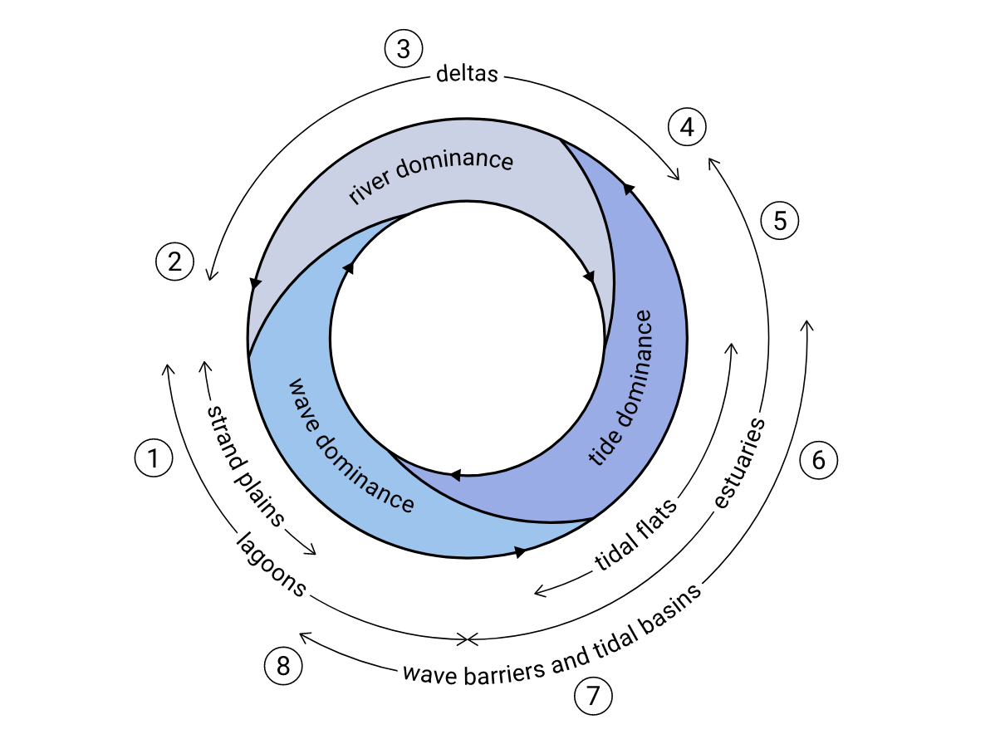

Characterization of Coastal Systems#
Welcome to the first notebook exercise of Coastal Systems (TU Delft, MSc Coastal Engineering)! This is only the second year that we experiment with notebooks in Coastal Systems. With these notebooks we hope to support the textbook with interactive material that helps you better understand the coastal processes and concepts explained in this course. Please let us know how you find the notebooks - we appreciate your feedback!
Chapter 2 of Coastal Dynamics Open Textbook describes the large geographical variation of coasts across the world. It explains how the coasts that we have today are shaped by both present-day processes and processes millions years ago. It distinguishes between three different order of features, which are associated to different orders of of time. In this notebook we will look at coastal systems at these different orders of scale.
Import libraries that we use for our analysis#
import logging
import pathlib
import sys
import warnings
import colorcet as cc
import dotenv
import geopandas as gpd
import holoviews as hv
import hvplot.pandas # noqa: API import
import numpy as np
import pandas as pd
import panel as pn
import pooch
from bokeh.models import PanTool, WheelZoomTool
import coastal_dynamics as cd
# Silence DeprecationWarning # Future TODO: in spring 2024 rm this silence and check status
with warnings.catch_warnings():
warnings.filterwarnings("ignore", category=DeprecationWarning)
import dask.dataframe as dd
# Activate Panel extension to make interactive visualizations
pn.extension()
# Read questions from cloud storage
questions = cd.read_questions(
"az://coastal-dynamics/questions/1_coastal_classification_v2_hashed.json",
storage_options={"account_name": "coclico"},
)
Part 1: Tectonic classification#
In this notebook we will start with the broadest (or first order) features of the coast that cover large geographical distances (thousands of kilometres) and are linked to the long-term geological process of plate tectonics. We will do so by using earthquake data from the USGS. The dataset we load contains a sample (10%) of observed eartquakes between Jan 2000 and Dec 2018. Why earthquake data? Earthquake data reveals geologists the mysteries of the deep, but also for coastal researchers the data is insightful. Lets first load the data by running the next cells.
Load the earthquake data#
We load the data (tabular data including geometries) and index the columns to only keep the data in memory that we actually need. In total the dataset contains 2.2 million earthquakes, but here we use a sample (10%), so the data contains approx. 220k eartquake entries. If you find that the interactive panel responds slow to how you adjust the widgets, please consider to take another sample. You can do so by uncommenting the sample line in the next cell. So if you set frac=0.1 you have a dataframe with approx. 22k unique earthquakes over the world.
eartquakes_fp = pooch.retrieve(
"https://coclico.blob.core.windows.net/coastal-dynamics/1_coastal_classification/earthquakes_sample.parquet",
known_hash="30dadc107887022464625be5a0d709894c57ec78c8cdfa9d2b697d2580c3c424",
)
WEB_MERCATOR_LIMITS = (
-20037508.342789244,
20037508.342789244,
) # max polar latitudes that can be handled in World Mercator
df = (
dd.read_parquet(eartquakes_fp)
.sample(
frac=0.1
) # uncomment this line if loading the data takes too long on your computer
.set_index("time")
.compute()
.tz_localize(None)
.sort_index()
)
# To save memory we drop most of the columns. Also we drop the polar latitudes that cannot be displayed in the web mercator projection.
df = df[["mag", "depth", "latitude", "longitude", "place", "type"]][
df["northing"] < WEB_MERCATOR_LIMITS[1]
]
Downloading data from 'https://coclico.blob.core.windows.net/coastal-dynamics/1_coastal_classification/earthquakes_sample.parquet' to file '/home/runner/.cache/pooch/96a6f4f4d9e9d4fc95d9ba3d7b731ed9-earthquakes_sample.parquet'.
Isobaths#
We also get the bathymetric contours for a water depth of -200m, which we will use as a proxy to find the boundary of the continental shelf. Because we want to maintain interactive plots, all shorter isobaths are dropped. Computing lengths is a metric operation, so the data has to be reprojected in a planar projection first.
isobath_fp = pooch.retrieve(
"https://coclico.blob.core.windows.net/coastal-dynamics/1_coastal_classification/isobaths200.gpkg",
known_hash="2b25adb7d3923e3969f6fb0c1f53e5e5850acd3bf6a3468722f0a1434a395ae5",
)
data200 = gpd.read_file(isobath_fp)
data200["length"] = data200.to_crs("EPSG:3857").geometry.length
data200 = data200[data200["length"] > 5 * 10**6]
Downloading data from 'https://coclico.blob.core.windows.net/coastal-dynamics/1_coastal_classification/isobaths200.gpkg' to file '/home/runner/.cache/pooch/69442bc3a8c36a217241f53476e0f4c0-isobaths200.gpkg'.
Plot function for earthquake data#
To explore the data we use visualization tools from the Holoviz project that makes high-level tools to simplify visualization in Python. Run the cell eblow
If the visualization is too slow, please adjust the sliders such that less data is shown.
After running the cell below you will have a panel with several widgets to index the eartquake data; by magnitude, depth and time, while the colors on the map show either the magintude or the depth of the earthquakes.
Note: Although you dont have to understand the plot method, we include it here so you can see how these interactive plots are made!
def show_earthquakes(plot_where):
"""
change value of 'plot_where' to:
'inline' if you would like the plot to show in the notebook
'pop-out' if you would like the plot to show in a new tab (i.e. seperate window)
"""
# Below we build the earthquake widget
title_bar = pn.pane.Markdown(
"## Part 1: Tectonic classification",
styles={"color": "black"},
width=400,
# margin=(10, 5, 10, 15),
)
# define widgets that can be used to index the data
magnitude_slider = pn.widgets.RangeSlider(
name="Earthquake magnitude [Richter]", start=0.1, end=10
)
depth_slider = pn.widgets.RangeSlider(
name="Earthquake depth [km]", start=0.1, end=650
)
date_slider = pn.widgets.DateRangeSlider(
name="Date", start=df.index[0], end=df.index[-1]
)
column_types = pn.widgets.Select(
name="Show earthquake magnitude or depth?", options=["mag", "depth"]
)
plot_isobaths = pn.widgets.Select(
name="Plot isobaths -200m?", options=["no", "yes"]
)
@pn.depends(
magnitude_slider.param.value_start,
magnitude_slider.param.value_end,
depth_slider.param.value_start,
depth_slider.param.value_end,
date_slider.param.value_start,
date_slider.param.value_end,
column_types.param.value,
plot_isobaths.param.value,
)
def plot_earthquake_panel(
magnitude_start,
magnitude_end,
depth_start,
depth_end,
date_start,
date_end,
column_type,
plot_isobath,
):
panel = df[
(df.mag > magnitude_start)
& (df.mag < magnitude_end)
& (df.depth > depth_start)
& (df.depth < depth_end)
& (df.index >= pd.Timestamp(date_start))
& (df.index <= pd.Timestamp(date_end))
]
# inverted fire colormap from colorcet
cmap = cc.CET_L4[::-1]
colorbar_labels = {
"mag": "Magnitude [Richter]",
"depth": "Earthquake depth [km]",
}
p = panel.hvplot.points(
x="longitude",
y="latitude",
geo=True,
color=column_type,
global_extent=True,
tiles="ESRI",
# frame_width=900,
ylabel="Latitude [deg]",
xlabel="Longitude [deg]",
cmap=cmap,
tools=["tap"],
hover_cols=["place", "time"],
logz=True,
clim=(1, None),
clabel=colorbar_labels[column_type],
)
if plot_isobath == "yes":
baths = data200.hvplot(
geo=True, line_width=2, line_color="white", line_dash="dashed"
)
p = p * baths
p.opts(width=1000, height=500, tools=["wheel_zoom"])
return p
earthquake_panel = pn.Column(
pn.Row(
pn.Column(
pn.Row(title_bar, align="start"),
pn.Row(plot_isobaths, align="start"),
pn.Row(column_types, align="start"),
),
pn.Column(
pn.Row(magnitude_slider, align="start"),
pn.Row(depth_slider, align="start"),
pn.Row(date_slider, align="start"),
),
pn.Column(),
),
pn.Row(plot_earthquake_panel, align="center"),
)
if plot_where == "inline":
return earthquake_panel
elif plot_where == "pop-out":
earthquake_panel.show()
else:
print("please use either inline or pop-out for the plot_where variable")
Now plot the earthquake data#
Execute the cell below to generate the plot by using the function we defined above. Please note that altering the slider positions or selecting different options from the dropdown menus may trigger a warning; it can safely be ignored, and possibly silenced by the adjusting the logging warning level.
For efficiency, the plots are generated without the -200m isobathymetry by default. Enable this feature if you would like to see detailed depth contours, but it will increase the plotting time.
logging.getLogger().setLevel(logging.ERROR)
show_earthquakes(plot_where="pop-out")
Launching server at http://localhost:44817
Plate tectonics#
Earthquake data support one of the most fundamental processes in the geology: plate tectonics. Although plate tectonics is a relatively slow process that acts on the geological time scale, it has had an enormous impact on the formation of coastlines and determines the broadest features of the coast.
Run the code cell below to access the questions that you can answering using the earthquake dashboard. For convenience, you may open the Panel dashboard in a separate browser tab to view the questions and plot side by side.
q1 = cd.QuestionFactory(questions["Q1-1"]).serve()
q2 = cd.QuestionFactory(questions["Q1-2"]).serve()
q3 = cd.QuestionFactory(questions["Q1-3"]).serve()
pn.Column(q1, q2, q3)
Australian Gold Coast#
For the upcoming question, consider the east Australian Gold Coast, which is located around the easternmost point of Australia (south of Brisbane).
q4 = cd.QuestionFactory(questions["Q1-4"]).serve()
pn.Column(q4)
Tectonic influence on coasts#
In 1971 Inman, D. L. & Nordstrom, C. E. used plate tectonics to classify the coast. They distinguish three main types of coasts: leading edge, trailing edge and marginal sea. In the questions below, match the correct characteristics to each class.
q5 = cd.QuestionFactory(questions["Q1-5"]).serve()
q6 = cd.QuestionFactory(questions["Q1-6"]).serve()
q7 = cd.QuestionFactory(questions["Q1-7"]).serve()
q8 = cd.QuestionFactory(questions["Q1-8"]).serve()
q9 = cd.QuestionFactory(questions["Q1-9"]).serve()
pn.Column(q5, q6, q7, q8, q9)
The influence of sediment supply#
Inman, D. L. & Nordstrom (1971) further distinguish Afro-trailing-edge coasts and Amero-trailing-edge coasts based on differences in sediment supplies.
q10 = cd.QuestionFactory(questions["Q1-10"]).serve()
q11 = cd.QuestionFactory(questions["Q1-11"]).serve()
q12 = cd.QuestionFactory(questions["Q1-12"]).serve()
pn.Column(q10, q11, q12)
Part 2: Process-based coastal classification#
In the section part of this notebook we will explore several coastal systems around the world considering the second and third order scale of features. In chapter two of the Coastal Dynamics open textbook it is explained how coastal systems can be classified according to the processes that characterize these systems. For example, one of the figures (below) shows how the relative influence of fluvial, wave and tidal processes influences the shape of coastal features. The idea of this exercise is that you identify the signatures of the processes that are introduced in chapter 2 in several coastal systems around the world.

Load coastal systems data and define a plot function#
In the cell below we define a small plot function that generates a ESRI World Imagery basemap given a longitude, latitude, zoom level and name. Also, a small sheet of coastal systems around the world is loaded into geopandas, a Python library for geospatial tabular data. In the cells afterwards we sample this dataframe and show the coastal system on a map.
Note: Although you dont have to understand the plot method, we include it here so you can see how these interactive plots are made!
coastal_systems_fp = pooch.retrieve(
"https://coclico.blob.core.windows.net/coastal-dynamics/1_coastal_classification/coastal_systems.parquet",
known_hash="923fd66cc58b5fbf32abbc51f46af15b179ed06e922bb9ff5efeb5680853900a",
)
coastal_systems = gpd.read_parquet(coastal_systems_fp)
Downloading data from 'https://coclico.blob.core.windows.net/coastal-dynamics/1_coastal_classification/coastal_systems.parquet' to file '/home/runner/.cache/pooch/6cc99866e0700dd647135ef4fd49eb33-coastal_systems.parquet'.
def show_coastal_systems(plot_where):
"""
change value of 'plot_where' to:
'inline' if you would like the plot to show in the notebook
'pop-out' if you would like the plot to show in a new tab (i.e. seperate window)
"""
# Below we build the widget
title_bar = pn.Row(
pn.pane.Markdown(
"## Exercise 2: Coastal system characterization",
styles={"color": "black"},
width=800,
sizing_mode="fixed",
margin=(10, 5, 10, 15),
),
pn.Spacer(),
)
options = coastal_systems.name.to_list()
coastal_systems_slider = pn.widgets.Select(
name="Coastal system", options=options, value=np.random.choice(options)
)
plot_isobaths = pn.widgets.Select(
name="Plot isobaths -200m?", options=["no", "yes"]
)
@pn.depends(coastal_systems_slider.param.value, plot_isobaths.param.value)
def plot_coastal_system(name, plot_isobath):
system = coastal_systems.loc[coastal_systems["name"] == name].copy()
west, south, east, north = system[
["west", "south", "east", "north"]
].values.flatten()
p = system.hvplot.points(
x="lon",
y="lat",
geo=True,
color="red",
alpha=0,
xlim=(west, east),
ylim=(south, north),
tiles="ESRI",
frame_width=1100,
ylabel="Latitude [deg]",
xlabel="Longitude [deg]",
)
if plot_isobath == "yes":
baths = data200.hvplot(
geo=True, line_width=2, line_color="white", line_dash="dashed"
)
p = p * baths
p.opts(frame_width=1000, frame_height=500, tools=["pan", "wheel_zoom"])
return p
app = pn.Column(
# title_bar,
pn.Row(plot_isobaths, align="center"),
pn.Row(coastal_systems_slider, align="center"),
pn.Row(plot_coastal_system, align="center"),
)
if plot_where == "inline":
return app
elif plot_where == "pop-out":
app.show()
else:
print("please use either 'inline' or 'pop-out' for the 'plot_where' variable")
Plot coastal systems#
Execute the cell below to plot coastal systems using the function we defined above. Please note that altering the slider positions or selecting different options from the dropdown menus may trigger a warning; it can safely be ignored, and possibly silenced by the adjusting the logging warning level.
logging.getLogger().setLevel(logging.ERROR)
show_coastal_systems(plot_where="pop-out")
Launching server at http://localhost:33803
Part 2a: Characterizing Individual Coastal Systems#
One of the most useful skills that a modern coastal engineer can have is being able to interpret satellite imagery. What can we learn about coasts from remote sensing? How can we apply what we learned in Chapter 2 about coastal classification? When you look at these images, consider the following checklist:
Where is your site with respect to plate boundaries? (leading, trailing)
Is there evidence of past RSLR rise, fall, or stability?
Is there evidence of glaciation?
What are the dominant hydrodynamic processes and sediment sources (wave/tide/river)?
Primary/secondary coastal forms? (See Table 2.3)
What kind of sediment is present (sand/mud/other)? How much?
What kind of biotic or human influences do you see?
Is coast prograding or retreating?
q13 = cd.QuestionFactory(questions["Q1-13"]).serve()
q14 = cd.QuestionFactory(questions["Q1-14"]).serve()
q15 = cd.QuestionFactory(questions["Q1-15"]).serve()
q16 = cd.QuestionFactory(questions["Q1-16"]).serve()
q17 = cd.QuestionFactory(questions["Q1-17"]).serve()
q18 = cd.QuestionFactory(questions["Q1-18"]).serve()
q19 = cd.QuestionFactory(questions["Q1-19"]).serve()
pn.Column(q13, q14, q15, q16, q17, q18, q19)
Part 2b: application!#
# Questions 2a
q20 = cd.QuestionFactory(questions["Q1-20"]).serve()
q21 = cd.QuestionFactory(questions["Q1-21"]).serve()
q22 = cd.QuestionFactory(questions["Q1-22"]).serve()
q23 = cd.QuestionFactory(questions["Q1-23"]).serve()
q24 = cd.QuestionFactory(questions["Q1-24"]).serve()
q25 = cd.QuestionFactory(questions["Q1-25"]).serve()
pn.Column(q20, q21, q22, q23, q24, q25)